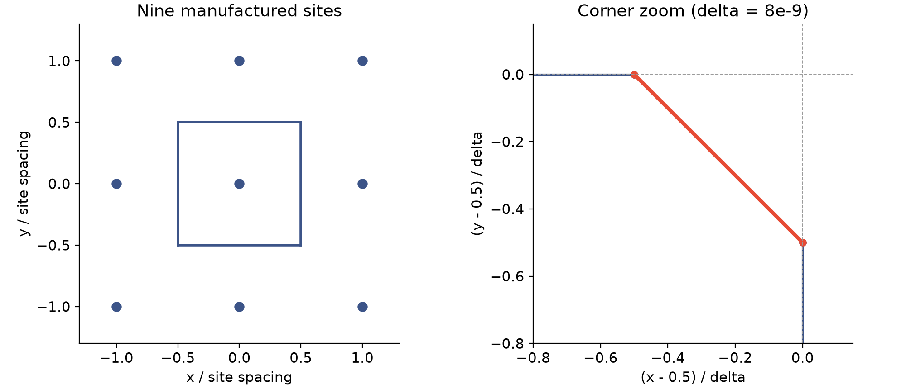
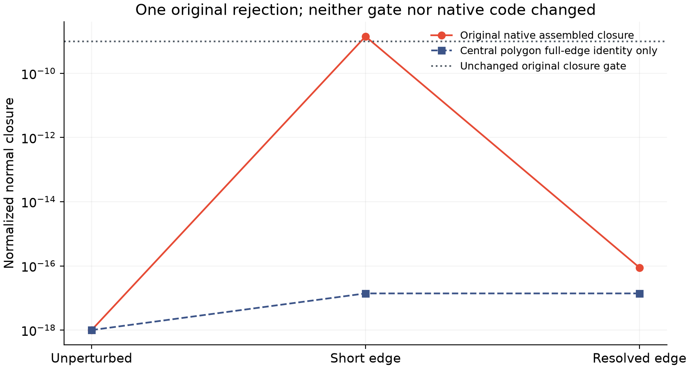

只用9个点，
检验一次几何失败候选。
出现了预先指定的短边反例。原生几何函数没有修改、原闭合门槛没有放宽，三组观测只执行一次，没有推进任何模拟时间步。
这是新构造的小反例，不是第78步的重放。原失败扰动几何没有导出；本页证明原规则存在一个问题场景，尚未证明它就是长算例的确切根因，也没有采用修复。
丢掉一条很短的边，会发生什么？
对一个闭合多边形，把每条边的“长度×外法向”相加应互相抵消。原实现会略过短于某个界限的边；这可能破坏后续面组装的闭合。我们固定9个点，只改变右上角一点的位置，包含未扰动、极小扰动、较大扰动三个预定条件。

极小扰动组中，短边长度为5.656854e-09个点间距，小于原截止值7.155418e-09。省略后中央单元闭合残差1.414214e-09，与原生报错数值一致；完整多边形边向量和为1.388e-17。
两组控制通过，一组被原门槛拒绝

未扰动和较大扰动组的原生构造通过；极短边组被原闭合门槛10⁻⁹拒绝。原生观测耗时0.531秒。构建后曾修正驱动输出路径和UTF-8读取，全部原记录保留；原生观测没有重试。
下一步检验候选修复，不直接重跑长作业
候选修复必须保持几何闭合、面积、正交、守恒和动力学的原门槛；还要处理真实运动几何、导数和实际时间／空间比较。完整边向量和接近零，只解释这个构造，不代表修复通过。原10／50／200微秒及完整C1仍未完成。
已查阅Shewchuk稳健谓词资料和CGAL几何内核文档：分类判断与新坐标构造需要分别考虑；这些资料不能替代本项目的反例或动力学证据。